容器控件
容器类控件用于存放别的控件，之前在设计UI界面时，把所有控件都放到最顶层的QWidget中然后布局，这样做的缺点是整体布局非常麻烦，因此可以使用容器类控件，把场上所有的控件分成几部分分别放入不同的容器中布局，然后在顶层窗口中对容器再布局就行了。
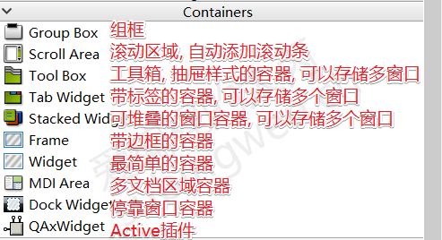
Qt中能用作容器的控件主要有上面几种，下面就简单介绍一下。
前面说到过QWidget是所有可视化窗口的基类，如果不指定父对象的话他就是一个独立的窗口；如果指定父对象，它就是作为一个容器而存在于父对象内。默认情况下QWidget是完全空白的。
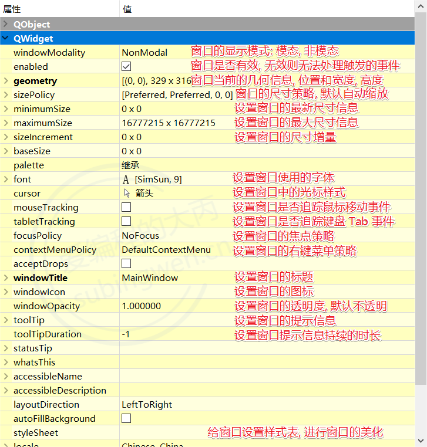
关于这些属性大部分都有对应的API函数, 在属性名前加 set即可, 大家可以自己从 QWidget这个类里边搜索， 并仔细阅读关于这些函数的参数介绍。
2.QFrame
QFrame继承QWidget，在外观上QWidget完全空白，而QFrame能够设置边框的阴影、线宽、形状等。
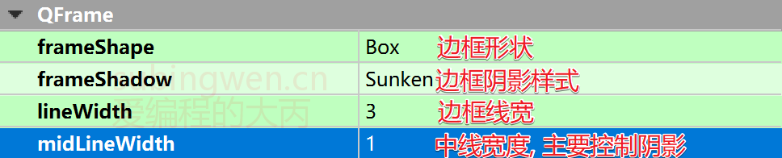
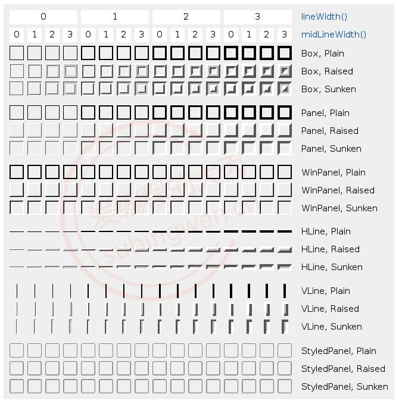
3.QGroupBox
QGroupBox继承QWidget，在这种类型的窗口中可以绘制边框、给窗口指定标题, 并且还支持显示复选框。
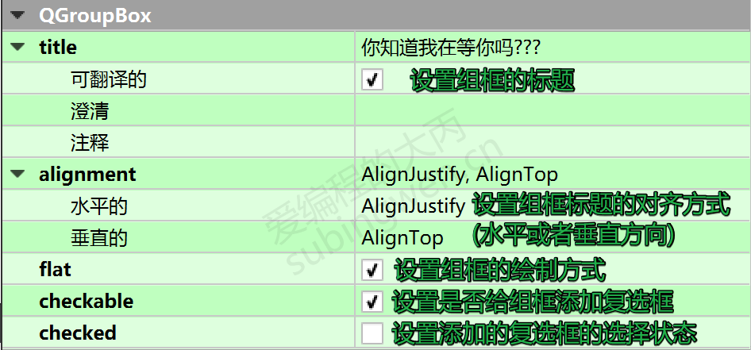
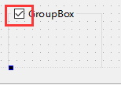
所谓复选框就是CheckBox
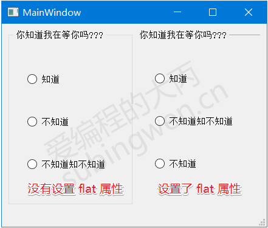
flat属性控制的是窗口边框的绘制方式, 如果打开该属性, 组框的边框就消失了。
QScrollArea这种类型的容器, 里边可以放置一些窗口控件, 当放置的窗口控件大于当前区域导致无法全部显示的时候, 滚动区域容器会自动添加相应的滚动条(水平方向或者垂直方向), 保证放置到该区域中的所有窗口内容都可以正常显示出来。对于使用者不需要做太多事情, 只需要把需要显示的窗口放到滚动区域中就行了。
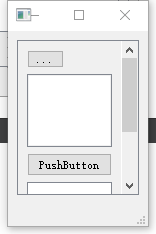
4.1相关API
在某些特定环境下, 我们需要动态的往滚动区域内部添加要显示的窗口, 或者动态的将显示的窗口移除, 这时候就必须要调用对应的API函数来完成这部分操作了。主要API有两个 添加 - setWidget(), 移除 - takeWidget()
1
2
3
4
5
6
7
8
9
10
11
12
13
14
15
16
17
18
19
20
21
22
23
24
25
26
27
28
29
30
31
32
33
|
QScrollArea::QScrollArea(QWidget *parent = Q_NULLPTR);
void QScrollArea::setWidget(QWidget *widget);
QWidget *QScrollArea::takeWidget();
Qt::Alignment alignment() const;
void setAlignment(Qt::Alignment);
bool widgetResizable() const;
void setWidgetResizable(bool resizable);
|

具体使用时，如果想让整个页面在被缩放时能够出现滚动条，则可以在窗口最顶层放一个QScrollArea，然后之后把所有的控件都放到这个QScrollArea内
QToolBox工具箱控件, 可以存储多个子窗口, 该控件可以实现类似QQ的抽屉效果, 每一个抽屉都可以设置图标和标题, 并且对应一个子窗口, 通过抽屉按钮就可以实现各个子窗口显示的切换。
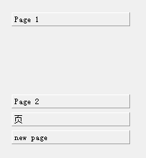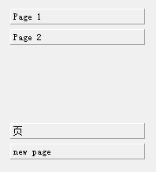
注意：插入新页需要在ui界面中使用右键
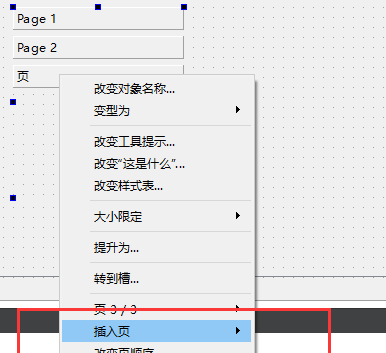
5.1 相关API
1
2
3
4
5
6
7
8
9
10
11
12
13
14
15
16
17
18
19
20
21
22
23
24
25
26
27
28
29
30
31
32
33
34
35
36
37
38
39
40
41
42
43
44
45
46
47
48
49
50
51
52
53
54
55
56
57
|
QToolBox::QToolBox(QWidget *parent = Q_NULLPTR, Qt::WindowFlags f = Qt::WindowFlags());
int QToolBox::addItem(QWidget *widget, const QString &text);
int QToolBox::addItem(QWidget *widget, const QIcon &icon, const QString &text);
int QToolBox::insertItem(int index, QWidget *widget, const QString &text);
int QToolBox::insertItem(int index, QWidget *widget, const QIcon &icon,
const QString &text);
void QToolBox::removeItem(int index);
void QToolBox::setItemEnabled(int index, bool enabled);
void QToolBox::setItemIcon(int index, const QIcon &icon);
void QToolBox::setItemText(int index, const QString &text);
void QToolBox::setItemToolTip(int index, const QString &toolTip);
bool QToolBox::isItemEnabled(int index) const;
QIcon QToolBox::itemIcon(int index) const;
QString QToolBox::itemText(int index) const;
QString QToolBox::itemToolTip(int index) const;
int QToolBox::currentIndex() const;
QWidget *QToolBox::currentWidget() const;
int QToolBox::indexOf(QWidget *widget) const;
int QToolBox::count() const;
[signal] void QToolBox::currentChanged(int index);
[slot] void QToolBox::setCurrentIndex(int index);
[slot] void QToolBox::setCurrentWidget(QWidget *widget);
|
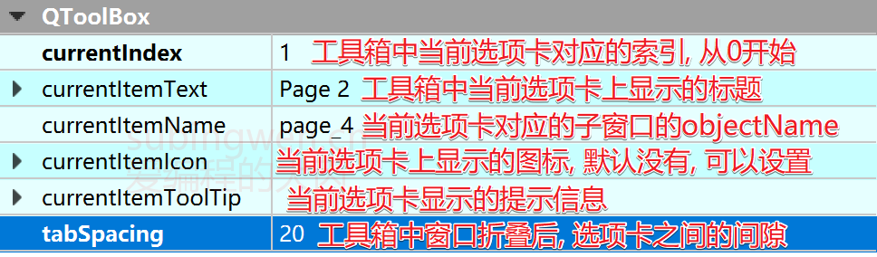
QTabWidget的一种带标签页的窗口，在这种类型的窗口中可以存储多个子窗口，每个子窗口的显示可以通过对应的标签进行切换(类似于浏览器)。
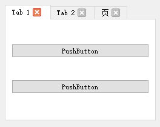
- 该控件也要在ui配置页面中使用右键来添加新页面
- tab边上的叉叉点了后该页面不会关闭，需要自己写槽函数关。
1
2
3
4
5
6
|
connect(ui->tabWidget, &QTabWidget::tabCloseRequested, this, [=](int index)
{
ui->tabWidget->removeTab(index);
});
|
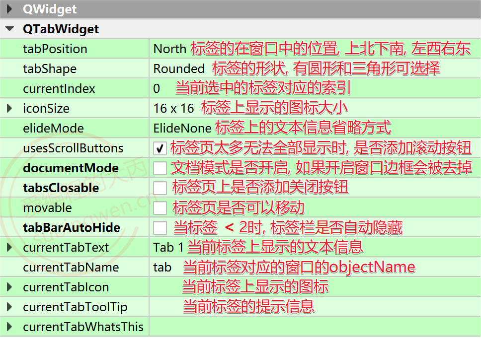
6.1相关API
1
2
3
4
5
6
7
8
9
10
11
12
13
14
15
16
17
18
19
20
21
22
23
24
25
26
27
28
29
30
31
32
33
34
35
36
37
38
39
40
41
42
43
44
45
46
47
48
49
50
51
52
53
54
55
56
57
58
59
60
61
62
63
64
65
66
67
68
69
70
71
72
73
74
75
76
77
78
79
80
81
82
83
84
85
86
87
88
89
90
91
92
93
94
95
96
97
98
99
100
101
102
103
104
105
106
107
108
109
110
111
112
113
114
115
116
117
118
|
QTabWidget::QTabWidget(QWidget *parent = Q_NULLPTR);
int QTabWidget::addTab(QWidget *page, const QString &label);
int QTabWidget::addTab(QWidget *page, const QIcon &icon, const QString &label);
int QTabWidget::insertTab(int index, QWidget *page, const QString &label);
int QTabWidget::insertTab(int index, QWidget *page,
const QIcon &icon, const QString &label);
void QTabWidget::removeTab(int index);
int count() const;
void QTabWidget::clear();
int QTabWidget::currentIndex() const;
QWidget *QTabWidget::currentWidget() const;
QWidget *QTabWidget::widget(int index) const;
Qt::TextElideMode QTabWidget::elideMode() const;
void QTabWidget::setElideMode(Qt::TextElideMode);
QSize QTabWidget::iconSize() const
void QTabWidget::setIconSize(const QSize &size)
bool QTabWidget::isMovable() const;
void QTabWidget::setMovable(bool movable);
bool QTabWidget::tabBarAutoHide() const;
void QTabWidget::setTabBarAutoHide(bool enabled);
bool QTabWidget::isTabEnabled(int index) const;
void QTabWidget::setTabEnabled(int index, bool enable);
QIcon QTabWidget::tabIcon(int index) const;
void QTabWidget::setTabIcon(int index, const QIcon &icon);
TabPosition QTabWidget::tabPosition() const;
void QTabWidget::setTabPosition(TabPosition);
TabShape QTabWidget::tabShape() const;
void QTabWidget::setTabShape(TabShape s);
QString QTabWidget::tabText(int index) const;
void QTabWidget::setTabText(int index, const QString &label);
QString QTabWidget::tabToolTip(int index) const;
void QTabWidget::setTabToolTip(int index, const QString &tip);
bool QTabWidget::tabsClosable() const;
void QTabWidget::setTabsClosable(bool closeable);
bool QTabWidget::usesScrollButtons() const;
void QTabWidget::setUsesScrollButtons(bool useButtons);
bool QTabWidget::documentMode() const;
void QTabWidget::setDocumentMode(bool set);
|
6.2信号
1
2
3
4
5
6
7
8
9
|
[signal] void QTabWidget::currentChanged(int index);
[signal] void QTabWidget::tabBarClicked(int index)
[signal] void QTabWidget::tabBarDoubleClicked(int index);
[signal] void QTabWidget::tabCloseRequested(int index);
|
6.3槽
1
2
3
4
|
[slot] void QTabWidget::setCurrentIndex(int index);
[slot] void QTabWidget::setCurrentWidget(QWidget *widget);
|